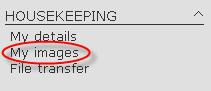
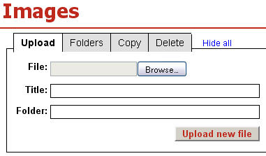
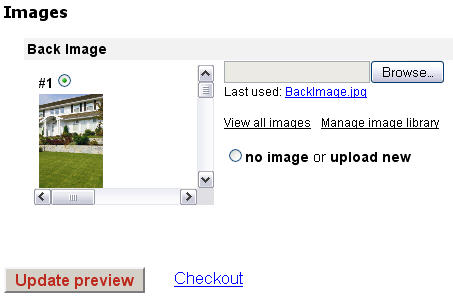
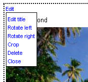
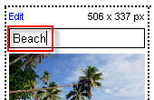

Uploading and editing images
Every image you have uploaded is stored in your Image library and can be used whenever needed until you manualy delete it.
Watch a Flash demonstration on this topic
Upload an image
To add images in your Image library, you can either:
- Upload images directly through the Image library uploader on images page or
- Upload images during the ordering process on a template preview page
Click on the My images link under the HOUSEKEEPING category in the left manu to access your Images page.

This will take you to the Images page where you can browse for the image on your hard drive and upload it.
/
The images uploader allows the user to specify a destination folder and title. Otherwise the image is put into the default folder.
Some templates give you the option to upload your own image. Those templates have a Images section below the text input fields. You can use one of the images you have previously uploaded in your Image library or click the Browse button and upload a new image which will also be automatically added in the image library after you click the Update preview button.
Every image you have uploaded in a template, wheather you have finished the order process or not, is added to your Image library and can be used whenever needed until you manualy delete it.

Edit an image
You can edit the images in your Image library by clicking on Edit link located in the top-left corner of every image.
/
/
Images can be rotated by 90° in both directions and cropped. Undo function brings the image into its original state. Deleting an image is permanent and cannot be undone.
/
/
Image title can be edited by clicking on Edit title menu entry or by clicking on the title directly. Pressing Enter saves the changes.
/
Size limits
A user account is limited to 500 images. Once the limit is reached the least used images are dropped.
There is no limit on the number of folders. A folder may contain any number of images, but only the top 100 can be displayed. Move extra files into a new folder to reduce the size.